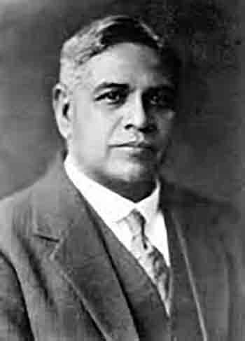
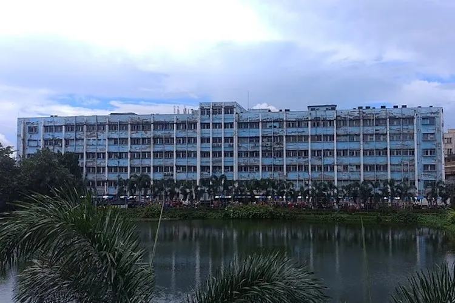
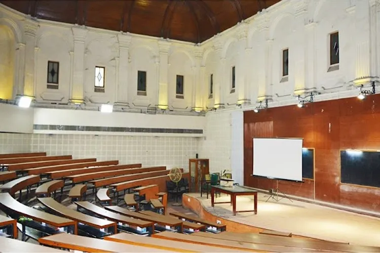
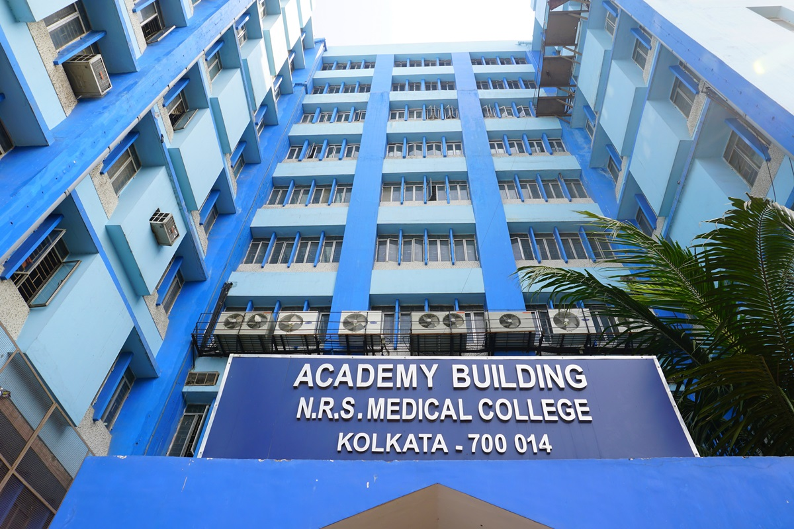
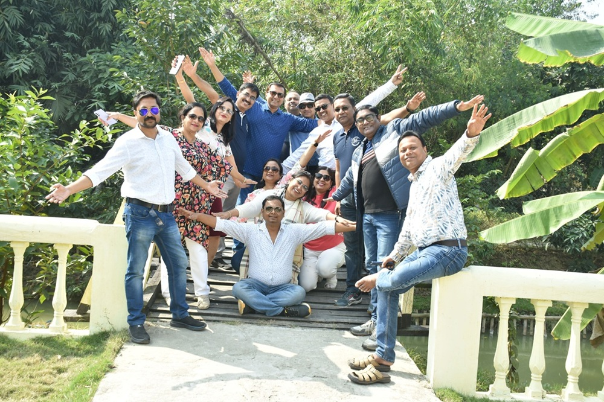

Born on 1 October 1861 in Netra village of South 24 Parganas, Sir Nil Ratan Sircar rose from humble beginnings to become one of India's greatest physicians, educationists and nation builders.
He devoted his life to medicine and graduated from the University of Calcutta with MB, MA and MD degrees.
Beyond his remarkable medical career, he helped establish several prestigious institutions, including the Bose Institute, Carmichael Medical College, Indian Association for the Cultivation of Science, and the Calcutta School of Tropical Medicine.
His lifelong commitment to medical education, scientific research, social service and nationalism continues to inspire generations of doctors across India.
Born in 1861, his childhood struggles and the loss of his mother inspired a lifelong dedication to medicine.
One of the most respected physicians of his time, known for clinical excellence and compassionate care.
Played a key role in establishing and nurturing some of India's most prestigious scientific and medical institutions.
Knighted in 1922, his name remains synonymous with excellence, service and medical education.
Established in 1864 as Sealdah Municipal Hospital, the institution has evolved over more than one and a half centuries into one of India's premier medical colleges. In 1950 it was renamed Nil Ratan Sircar Medical College to honour the legendary physician, educationist and freedom fighter.
Over the decades the college has produced thousands of outstanding medical professionals serving patients across India and around the world. Its distinguished faculty, rich academic tradition and commitment to clinical excellence continue to make it one of the country's most respected centres of medical education.
Modern laboratories, advanced teaching facilities, speciality departments and an ever-expanding research environment provide students with opportunities to grow into compassionate, ethical and highly skilled healthcare professionals.
For generations of students, NRS Medical College has been far more than an institution— it has been a place where friendships are formed, dreams take shape and lives are transformed.




The MBBS Batch of 1998 represents far more than a graduating class. It is a family brought together by shared dreams, countless hours of study, clinical postings, hostel life, friendship, laughter, and the unforgettable journey through one of the most memorable chapters of life.
Over the years our members have established themselves across diverse specialties, medical institutions, universities, research centres and healthcare organisations both in India and abroad.
Despite geographical distances and demanding professional lives, the bonds created during our college days remain as strong as ever. Every reunion rekindles memories, celebrates achievements, and reminds us that true friendship only grows stronger with time.
This website has been created to preserve those memories, strengthen our connections, and serve as a common platform for every member of the NRS Medicos '98 family.